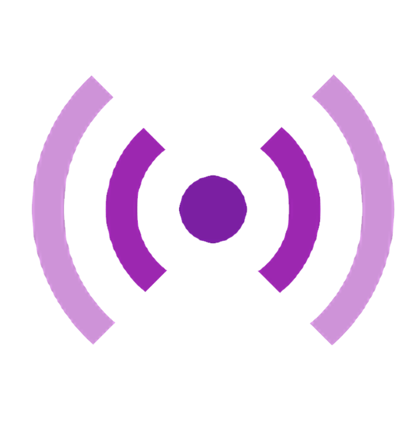

コードを書く以外も、同じ場所で。
ファイルを探す、文字を補完する、間違いを見つける、ターミナルで動かす、Gitで履歴を残す。作業ごとにアプリを行き来せず、流れを保ったまま開発できます。
テキストエディター
主に文字を書く場所。軽快でシンプル。
IDEのようなVS Code
書く＋調べる＋実行＋管理までを支える。
CODE WITH CONFIDENCE
コードを書く、見つける、整える、実行する。開発に必要な道具を一つにまとめた、初めてのためのVS Codeガイドです。
01 / WHAT IS AN IDE?
IDE（統合開発環境）は、プログラムを作るための道具をまとめたアプリです。VS Codeは厳密には軽量なコードエディターですが、拡張機能を加えることでIDEのように使えます。
ファイルを探す、文字を補完する、間違いを見つける、ターミナルで動かす、Gitで履歴を残す。作業ごとにアプリを行き来せず、流れを保ったまま開発できます。
主に文字を書く場所。軽快でシンプル。
書く＋調べる＋実行＋管理までを支える。
02 / INSTALL
公式サイトから入手し、通常どおりセットアップを進めます。Windowsでは、右クリックメニューやPATHへの追加を選べる画面があります。迷ったら基本は初期設定のままで大丈夫です。
Visual Studio Code 公式サイトへ行き、自分のOS（Windows / macOS / Linux）用のボタンを選びます。
ダウンロードしたインストーラーを開き、案内に従って進めます。通常は既定の場所へインストールでOKです。
最初に表示される「Welcome」画面から、フォルダーを開くか、新しいファイルを作って始められます。
03 / EXTENSIONS
左側のアクティビティバーにある四角いアイコン（Extensions）から探して追加できます。入れすぎると重くなることもあるので、まずは必要なものだけで十分です。
メニューや設定画面を日本語にします。英語表示が不安な人の最初の一本におすすめです。

HTMLを保存すると、ブラウザの表示を自動で更新。Webページ作りの確認がぐっと楽になります。
コードの見た目を整えるフォーマッター。チームで書式をそろえるときにも役立ちます。
04 / FIRST STEPS
File → Open Folder で作品ごとのフォルダーを開きます。フォルダーをVS Codeの画面へドラッグ＆ドロップして紐づけることもできます。
Ctrl + S で保存。Web制作では、保存したらLive Serverでブラウザを確認する習慣をつけましょう。
Ctrl + Shift + P で、たくさんの機能を名前から呼び出せます。操作に迷ったらここから検索。
色が付かない、補完が出ないときは、ファイルの種類や必要な拡張機能が合っているか確認します。